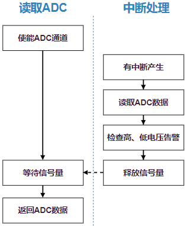

关键流程设计
4 Dec 2024
初始化流程
GPAI 驱动的初始化接口通过 INIT_DEVICE_EXPORT(drv_gpai_init) 完成，会通过调用 ADC 子系统的接口 rt_hw_adc_register() 注册一个 ADC 设备。
GPAI 控制器的初始化过程，主要步骤有：
-
初始化模块的 clk
-
注册中断
-
初始化默认参数
-
向设备框架中注册 ADC 设备
中断处理流程
GPAI 支持使用中断方式来读取数据，这样避免软件去做等待处理。

-
对于非周期模式：当用户层触发 convert() 接口，就会启动一次硬件去读数据
-
当硬件准备好数据，会产生一个中断
-
在中断处理函数中，用 INT Flag 来区分是哪个通道有数据，逐个通道扫描将数据读出，会缓存到一个全局变量中
-
对于周期模式：GPAI 控制器会自动按给定周期产生一次数据中断
注：
TODO：目前，当产生高电平、低电平告警的时候，只是驱动中打印警告信息，暂未做其他处理。